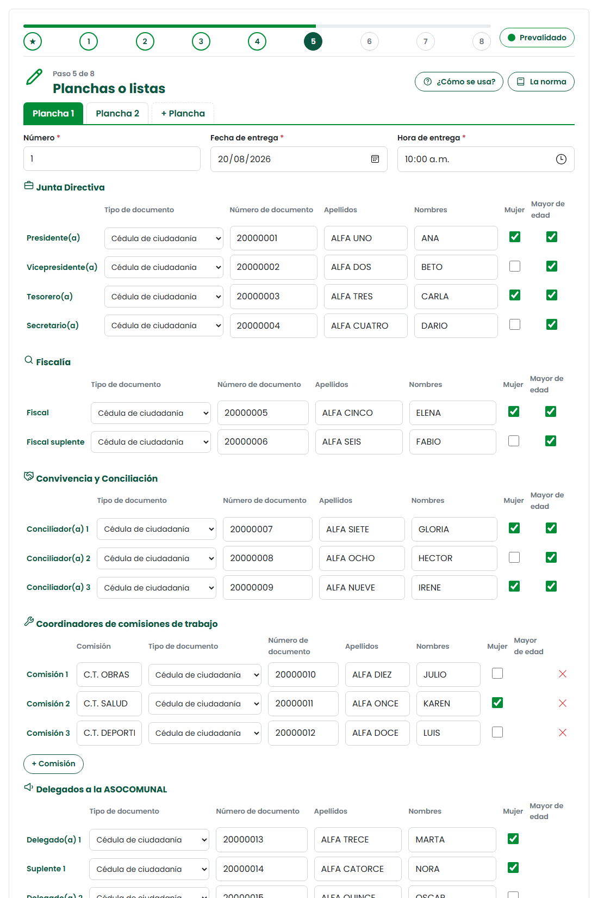
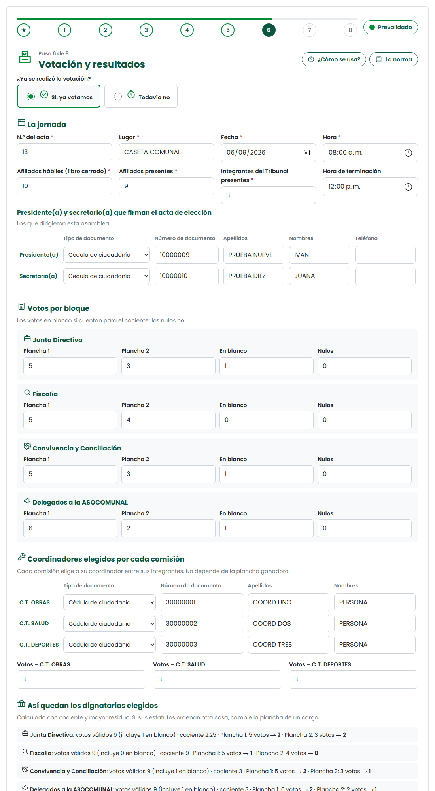

Paso 5 · Planchas o listas

- Una pestaña por plancha. Número, fecha y hora de entrega (antes de la fecha límite).
- Cada bloque: directiva, fiscalía, conciliación, mínimo 3 comisiones (en la Asocomunal, secretarías ejecutivas) y 3 delegados con suplente.
- Elija el tipo de documento y marque Mujer y Mayor de edad. Luego «Presentada por» y «Recibida por» (Tribunal).

Nadie puede estar en dos cargos ni en dos planchas. Mínimo el 30 % de los cargos para mujeres. Responda si hay parentesco: si lo hay, elija el grado (primos = 4.º, no permitido sin autorización). En la Asocomunal, cada conciliador debe ser delegado de una junta distinta.
Las planchas se entregan al Tribunal de Garantías, que las revisa con el secretario y el fiscal. Deben estar completas; se numeran por orden de entrega. Al menos el 30 % de los cargos deben ser para mujeres. Ley 2166, art. 34 · Manual Comunal, p. 17 y 44
🧮 Con dos o más planchas: el cociente
Votos de las planchas + votos en blanco. Los nulos no cuentan.
Votos válidos ÷ cargos del bloque. Ej.: 128 ÷ 4 = 32.
Cada plancha gana un cargo por cada cociente. Los que faltan van al mayor residuo.
Se aplica en Junta Directiva, Convivencia y Conciliación, y Delegados. Con una sola plancha no hay cociente: necesita la mitad más uno de los votos.
Cociente = votos válidos (planchas más blancos) ÷ cargos del bloque. Los blancos cuentan; los nulos no. Los cargos que sobran van por mayor residuo. Ley 2166, art. 34 · Manual Comunal, p. 49
Paso 6 · Votación y resultados

- Datos de la jornada: acta, lugar, fecha, afiliados hábiles y cuántos votaron.
- Votos de cada bloque: por plancha, en blanco y nulos. La página calcula y muestra quiénes quedan elegidos.
- Al final, adjunte la foto del listado de asistencia firmado de la elección.

Los coordinadores de las comisiones los eligen los integrantes de cada comisión, no la plancha ganadora (art. 45). En asamblea debe votar la mitad más uno; en elección directa, mínimo el 30 %. Deben estar al menos 2 del Tribunal.
Cada comisión elige a su coordinador entre sus integrantes y gana quien tenga más votos. Vale si vota la mitad más uno de la comisión (asamblea) o el 30 % (elección directa). Ley 2166, art. 45 · Manual Comunal, p. 48
✅ Antes de terminar
- Cada plancha está completa y se entregó a tiempo.
- Nadie aparece dos veces.
- Comparé los elegidos con el acta de elección firmada.
- Los votos suman lo mismo que el número de votantes.
- Cada comisión tiene el coordinador que eligieron sus integrantes.